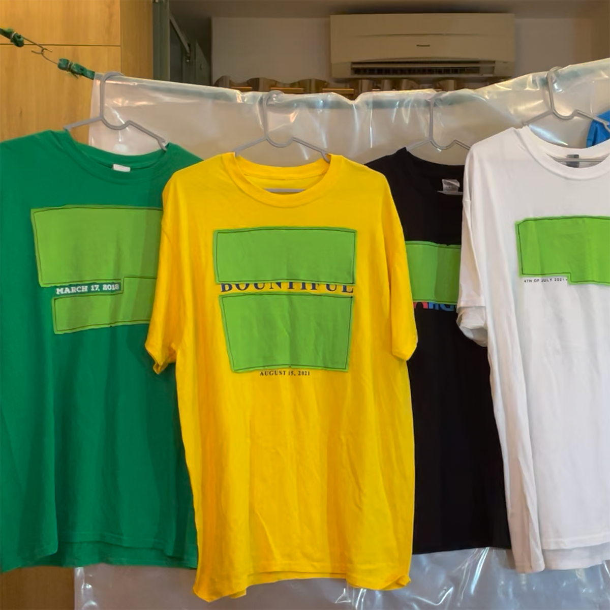
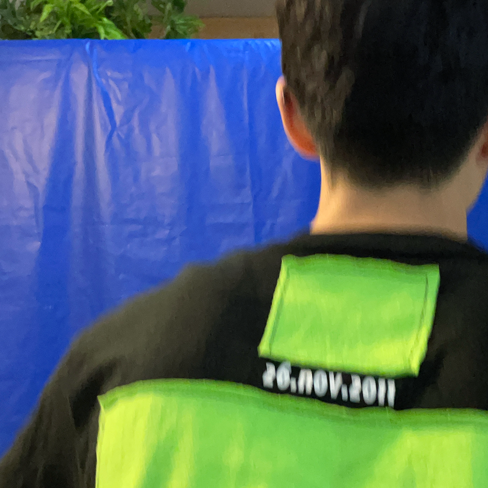
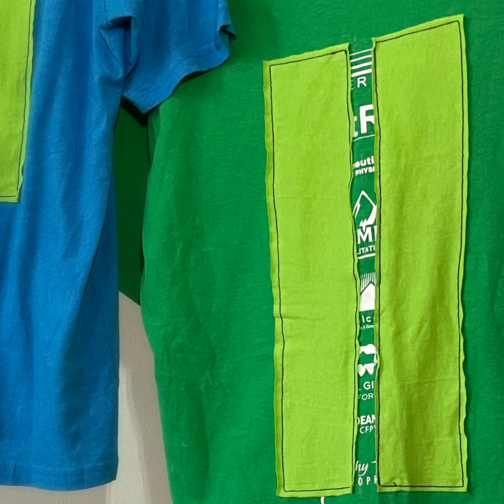
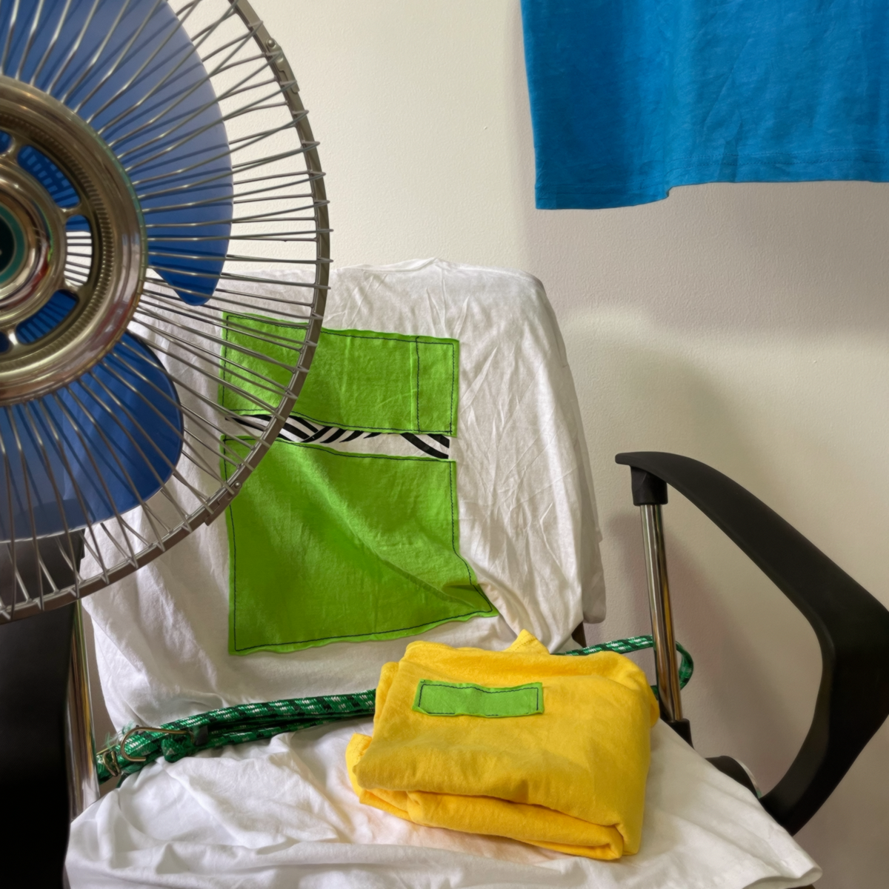
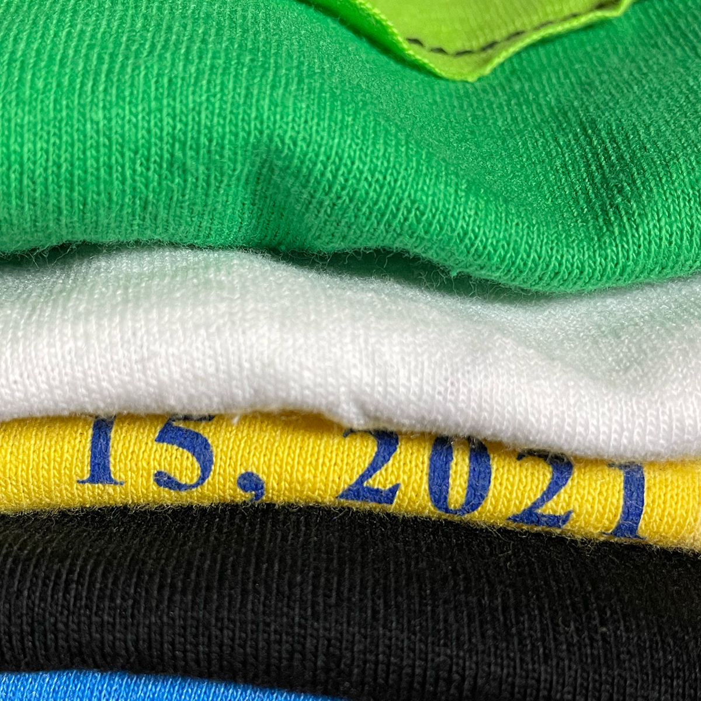
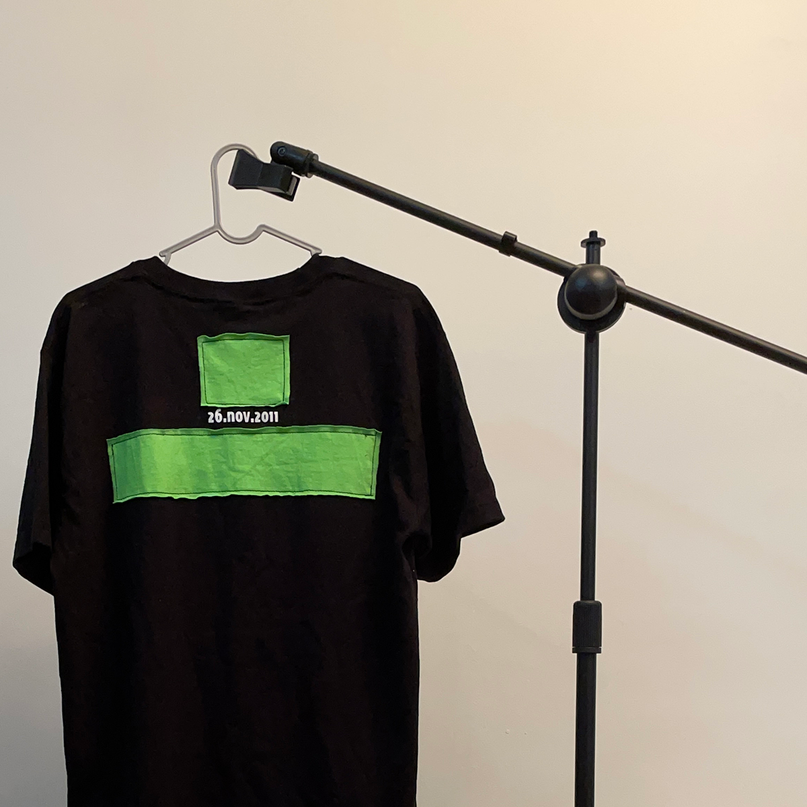
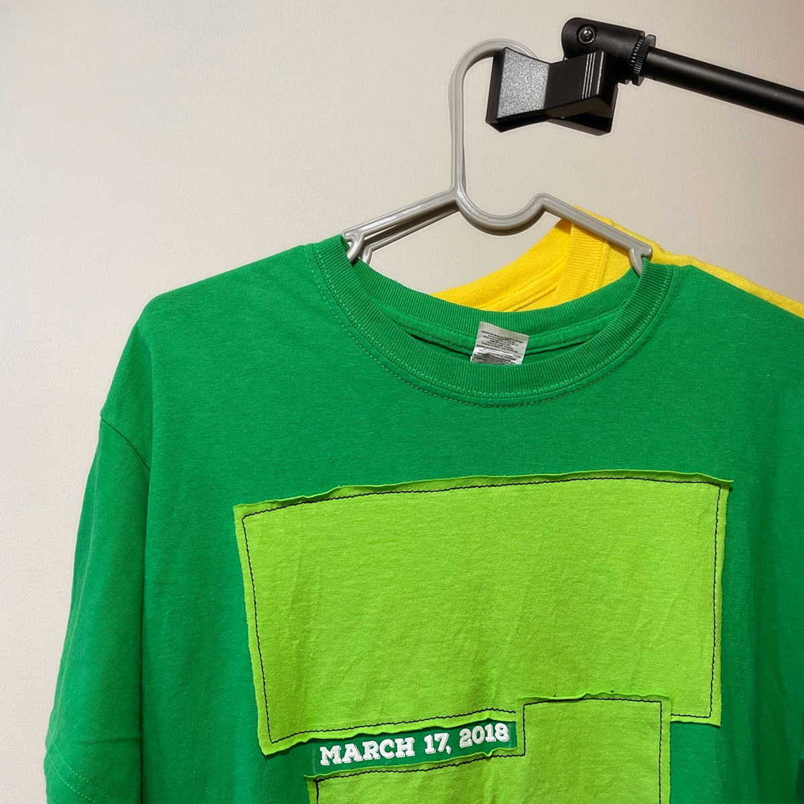

ReCommemoration
- Clothing waste is an environmental catastrophe. You know that already.
- See work from The Or Foundation, especially this website and this call to action.
- Although excessive clothing production is the fundamental issue, thrifting helps.
- Fashion is subjective, but some kinds of used clothes are super unpopular.
- If the game of upcycling is to renew desirability, this is an attempt to score.


- Commemorative tees are widely skipped over at the thrift store, I think.
- Who wants to rep a school's annual bake-a-thon? How about a corporate 5K?
- Well, me, kind of. It's playful or something; I have a sick sense of humor :)
  - The date hints the shirt's commemorative function; nearly all else is omitted.
- From hyperspecific to pluripotent. A day is lifted and relived. Hurrah!
- The next owner of the shirt can create new meaning, new sentimentality.
- But also: green screens are themselves material. Nothing is negative.
  - Go on, steal this idea.
- We must cut down the bloated rate of mass, few-use clothing production.
- I hope the spirit of these tees builds momentum toward doing so.